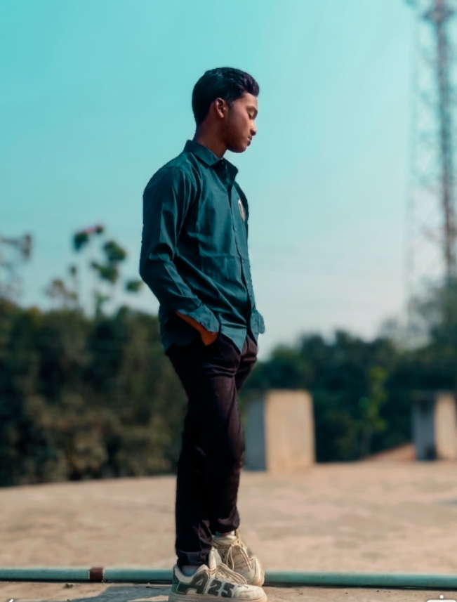
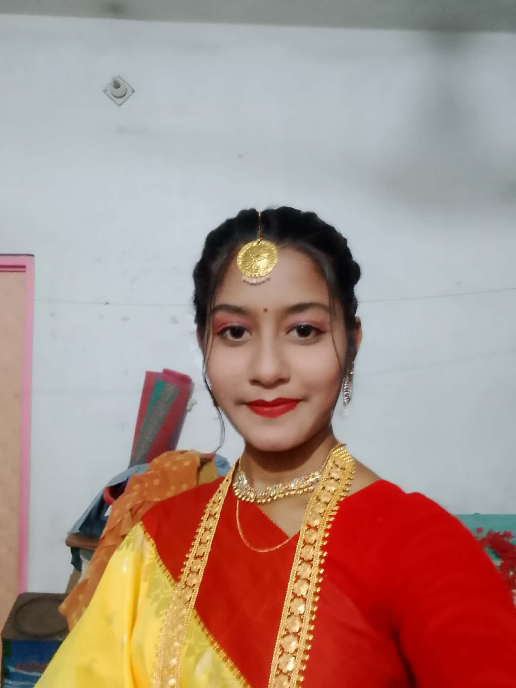

ভবিষ্যতে বলা যাবে না
রাজশাহী চারঘাট বাংলাদেশআব্দুল্লাহ আল নোমান একজন উদ্যমী এবং মেধাবী টেক-উত্সাহী। তিনি বর্তমানে সাইবার সিকিউরিটি, পাইথন প্রোগ্রামিং এবং ওয়েব ডেভেলপমেন্ট নিয়ে গভীরভাবে কাজ করছেন। প্রযুক্তির প্রতি তার অদম্য আগ্রহ তাকে প্রতিনিয়ত নতুন কিছু শিখতে অনুপ্রাণিত করে। প্রযুক্তির পাশাপাশি তিনি ফিনান্সিয়াল মার্কেট বিশ্লেষণ করতে এবং উচ্চ-ক্ষমতাসম্পন্ন গাড়ি নিয়ে গবেষণা করতে ভালোবাসেন। ভবিষ্যতে তিনি একটি নিরাপদ ডিজিটাল বিশ্বের ভিত্তি স্থাপনে সক্রিয় ভূমিকা রাখতে চান। আব্দুল্লাহ মনে করেন, প্রতিনিয়ত শিক্ষা এবং সৃজনশীলতা হলো সাফল্যের চাবিকাঠি।
